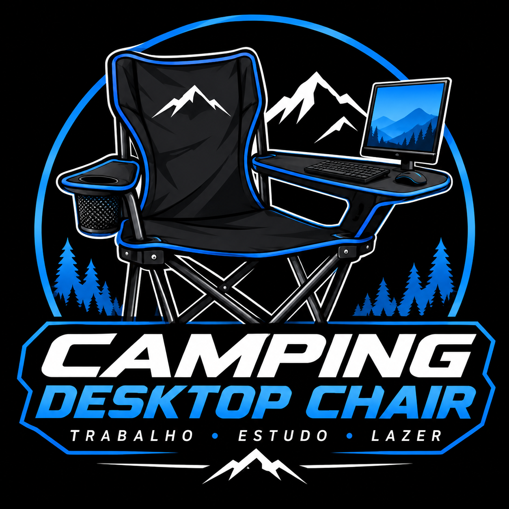

Redes de computadores
Conexão do PC da cadeira à rede local para acessar a internet e os recursos do projeto.
A Camping PC Chair une mobilidade, criatividade e tecnologia: uma estação desktop integrada a uma cadeira de camping, pensada para trabalho, estudo e lazer.

Um PC completo, sem o gabinete, integrado à estrutura de uma cadeira de Camping. o teclado e o mouse ficam em um apoio ao lado. O PC tem Acesso ao Wifi.
Na tela roda a Nosso Site sobre acampamento, uma página web local pensada para quem está sentado na cadeira.
Conexão do PC da cadeira à rede local para acessar a internet e os recursos do projeto.
VM configurada com o site em Html,CSS e Js Hospedado Utilizando o Ngrok.
Montagem do PC na estrutura da cadeira.